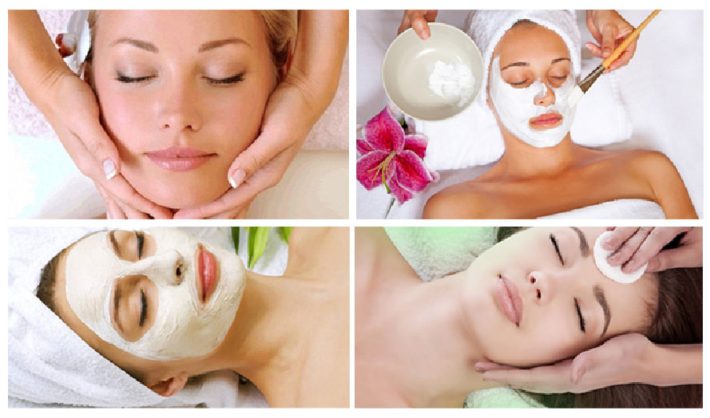

Tretmani lica
Predložićemo vam tretman u skladu sa vašim potrebama i godinama. Tretmani su prilagođeni redovnoj nezi lica ali i intezivnijim metodama za lice sa zahtevnom kožom. Podmladite svoje lice, umanjite bore, oslobodite se podočnjaka.
Hidrodermoabrazija je wellness tretman lica u kome se koristi voda koja pomešana sa kiseonikom, velikom brzinom vrši mehaničko čišćenje kože, uz brojne druge efekte, bez oporavka. Ovaj tretman je bezbolan, neagresivan, prijatan i ne ostavlja nikakve loše posledice posle kojih bi bio potreban oporavak.
Mogu se tretirati svi tipovi kože, bez obzira na starost. Suva i osetljiva koža su takođe podložne ovoj vrsti tretmana, bez ikakvih posledica. Promene su vidljive odmah posle tretmana – koža je svežija, glatkija i izgleda zdravo i životno. Tretman se može sprovoditi tokom čitave godine.
Mogu se tretirati svi tipovi kože, bez obzira na starost. Suva i osetljiva koža su takođe podložne ovoj vrsti tretmana, bez ikakvih posledica. Promene su vidljive odmah posle tretmana – koža je svežija, glatkija i izgleda zdravo i životno. Tretman se može sprovoditi tokom čitave godine.
Dermaroler je mehanički uređaj u obliku valjka sa sterilnim mikroiglicama od titanijuma. Ovim tretmanom postižu se veoma dobri rezultati u lečenju raznih vrsta ožiljaka, strija, bora, prvih znakova starenja, hiperpigmentacije, proširenih pora i drugih oštećenja kože. Dermaroler tretmanom stimuliše se stvaranje novog kolagena u koži, a dodavanjem hijaluronskih mezokoktela postiže se efekat podmlađivanja i zatezanja kože. Mezoterapija dermarolerom dubinski hidrira i revitalizira kožu lica, vrata i dekoltea. Tretman se radi tako što se zapravo vrši povreda papilarnog dermisa, sloja kože u kome se nalaze fibroblasti (ćelije koje proizvode kolagen), usled čega dolazi do nagle sinteze kolagena.
Rezultati su vidljivi već posle jednog tretmana.
Prednosti dermarolera su da podstiče prirodne mehanizme tela, ima kratko vreme oporavka, predstavlja neinvazivnu metodu - nema krvi, modrica, ožiljaka, ne isključuje klijenta iz svakodnevnih životnih aktivnosti, tretiraju se svi tipovi kože, može se raditi na svim delovima tela u toku cele godine (ne izaziva fotosenzitivnost), preparat je prirodan i nema alergiskih reakcija.
- Dermaroler tretman:
- podmlađuje i zateže kožu;
- u kombinaciji s hijaluronskim koktelima ( mezoterapija dermarolerom) poboljšava tonus, jedrinu i teksturu kože;
- smanjuje bore i ožiljke;
- sužava pore;
- uklanja ožiljke od akni;
- oporavlja kožu oštećenu suncem;
- pomaže kod hiperpigmentacije.
Rezultati su vidljivi već posle jednog tretmana.
Prednosti dermarolera su da podstiče prirodne mehanizme tela, ima kratko vreme oporavka, predstavlja neinvazivnu metodu - nema krvi, modrica, ožiljaka, ne isključuje klijenta iz svakodnevnih životnih aktivnosti, tretiraju se svi tipovi kože, može se raditi na svim delovima tela u toku cele godine (ne izaziva fotosenzitivnost), preparat je prirodan i nema alergiskih reakcija.
Tretman ultrazvučnom špatulom zasniva se na kombinaciji mehaničkog i električnog vibriranja, frekvencije od 25.000 vibracija u sekundi. Prodirujući efekat ultrazvuka dubinski čisti kožu i istovremno je i masira. Ćelije u dubljim slojevima snažno se stimulišu.
Ovim tretmanom postižu se odlični rezultati u čišćenju kože i tretmanu bora, bubuljica i pigmentnih fleka. Koža postaje blistavija, čista i elastična. Dejstvom elastičnih mikro-vibracionih talasa precizno se eksfolira stratum corneum, vrši temeljno čišćenje kože, koža se hidrira, poboljšava cirkulacija i vrši oksigenacija, uz istovremeno obnavljanje i rejuvenaciju kože.
Ovim tretmanom postižu se odlični rezultati u čišćenju kože i tretmanu bora, bubuljica i pigmentnih fleka. Koža postaje blistavija, čista i elastična. Dejstvom elastičnih mikro-vibracionih talasa precizno se eksfolira stratum corneum, vrši temeljno čišćenje kože, koža se hidrira, poboljšava cirkulacija i vrši oksigenacija, uz istovremeno obnavljanje i rejuvenaciju kože.
Svilene trepavice su svilene niti koje se koriste u svrhu produžavanja prirodnih trepavica i potpuno su neškodljive, jer prirodne trepavice prilikom procesa nadogradnje ostaju neoštećene. Svaka svilena trepavica pojedinačno lepi se posebnim lepkom na pojedinačnu prirodnu trepavicu, čime se postiže savršen prirodan izgled. Pre tretmana nadogradnje svilenih trepavica možete da odaberete njihovu dužinu, oblik i boju. Na svilene trepavice možete da stavljate maskaru – ali je bitno da nije vodootporna. Prilikom obavljanja fizičkih aktivnosti, treninga ili plivanja imaćete lepe trepavice bez bojazni da će vam se maskara razmazati.
Nanošenje svilenih trepavica predstavlja duži proces od lepljenja veštačkih. Ovim procesom svilena trepavica se lepi na prirodnu, dlaka na dlaku dok se ne postigne željeni gustina i oblik. Svilene trepavice nisu trajne, one se vremenom menjaju jer otpadaju zajedno sa prirodnim. Period koji je potreban da prirodna trepavica otpadne, predstavlja i period u kome će svilene trepavice trajati. Tretman nadogradnje svilenih trepavica je potpuno bezbolan, i traje između sat do dva, u zavisnosti od željene gustine (broja trepavica) koje želite da nadogradite.
Kada imate svilene trepavice treba da obratite pažnju na njihovo održavanje. Ne treba koristiti agresivne skidače šminke, jer tako mogu da se oštete ili skinu.
Nanošenje svilenih trepavica predstavlja duži proces od lepljenja veštačkih. Ovim procesom svilena trepavica se lepi na prirodnu, dlaka na dlaku dok se ne postigne željeni gustina i oblik. Svilene trepavice nisu trajne, one se vremenom menjaju jer otpadaju zajedno sa prirodnim. Period koji je potreban da prirodna trepavica otpadne, predstavlja i period u kome će svilene trepavice trajati. Tretman nadogradnje svilenih trepavica je potpuno bezbolan, i traje između sat do dva, u zavisnosti od željene gustine (broja trepavica) koje želite da nadogradite.
Kada imate svilene trepavice treba da obratite pažnju na njihovo održavanje. Ne treba koristiti agresivne skidače šminke, jer tako mogu da se oštete ili skinu.
